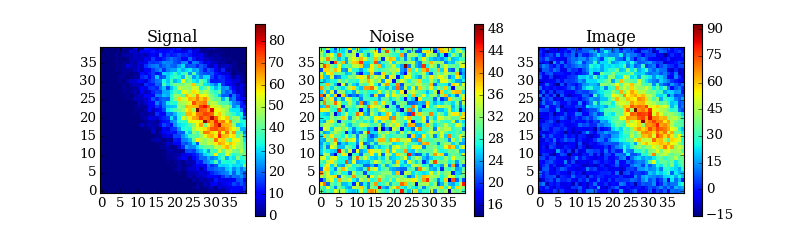

Reconstruction¶
Introduction¶
ctapipe.reco contains functions and classes to reconstruct events.
This will include two levels:
- Camera-level pre-procssing (images and parameterizations)
- Array-level reconstruction (showers)
Getting Started¶
"""Example how to make a mock shower image and plot it.
"""
import matplotlib.pyplot as plt
from ctapipe.io.camera import make_rectangular_camera_geometry
from ctapipe.reco import generate_2d_shower_model, make_mock_shower_image
NX = 40
NY = 40
geom = make_rectangular_camera_geometry(NX, NY)
showermodel = generate_2d_shower_model(centroid=[0.25, 0.0], length=0.1,
width=0.02, psi='40d')
image, signal, noise = make_mock_shower_image(geom, showermodel.pdf,
intensity=20, nsb_level_pe=30)
# make them into 2D arrays so we can plot them with imshow
image.shape = (NX, NY)
signal.shape = (NX, NY)
noise.shape = (NX, NY)
# here we just plot the images using imshow(). For a more general
# case, one should use a ctapipe.visualization.CameraDisplay
plt.figure(figsize=(10, 3))
plt.subplot(1, 3, 1)
plt.imshow(signal, interpolation='nearest', origin='lower')
plt.title("Signal")
plt.colorbar()
plt.subplot(1, 3, 2)
plt.imshow(noise, interpolation='nearest', origin='lower')
plt.title("Noise")
plt.colorbar()
plt.subplot(1, 3, 3)
plt.imshow(image, interpolation='nearest', origin='lower')
plt.title("Image")
plt.colorbar()
#plt.show()
(Source code, png, hires.png, pdf)
{kind=link}
{kind=link}

Reference/API¶
ctapipe.reco Package¶
Reconstruction Algorithms
As an example, Hillas parameterization algorithms are implemented in the hillas module. Things to resolve:
- the results for each are not consistent (factor of 2 in length/width?)
- the two use different output names. Should unify the output (e.g. define the columns somehow: in a class? a namedtiple?)
- or keep it simple, but in the Container wrapper map the dict to columns?
Functions¶
generate_2d_shower_model(centroid, width, ...) |
Create a statistical model (2D gaussian) for a shower image in a camera. |
hillas_parameters(pix_x, pix_y, image) |
Compute Hillas parameters for a given shower image. |
hillas_parameters_2(pix_x, pix_y, image) |
Compute Hillas parameters for a given shower image. |
make_mock_shower_image(geom, showerpdf[, ...]) |
Generates a pedestal-subtracted shower image from a statistical shower model (as generated by shower_model). |
tailcuts_clean(geom, image, pedvars[, ...]) |
Clean an image by selection pixels that pass a two-threshold tail-cuts procedure. |
Classes¶
HighOrderMomentParameters(skewness, ...) |
Shower moment parameters of third order. |
MomentParameters(size, cen_x, cen_y, length, ...) |
Shower moment parameters up to second order. |
ctapipe.reco.mock Module¶
Utilities to generate mock (fake) reconstruction inputs for testing purposes.
Example:
>>> from ctapipe.io import camera
>>> geom = camera.make_rectangular_camera_geometry(20,20)
>>> showermodel = generate_2d_shower_model(centroid=[0.25, 0.0], length=0.1,width=0.02, psi='40d')
>>> image, signal, noise = make_mock_shower_image(geom, showermodel.pdf)
>>> print(image.shape)
(400,)
Functions¶
generate_2d_shower_model(centroid, width, ...) |
Create a statistical model (2D gaussian) for a shower image in a camera. |
make_mock_shower_image(geom, showerpdf[, ...]) |
Generates a pedestal-subtracted shower image from a statistical shower model (as generated by shower_model). |